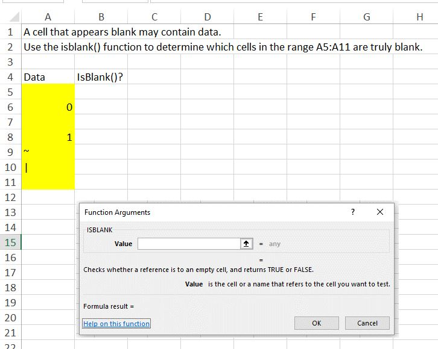

Active profile: use your course-specific Hermes profile mis362.
mis362
Hermes session:
First use: /new Formative03 Return later: /resume Formative03 When finished using Hermes: /quit
Hermes use is required for one meaningful checkpoint in this assignment. GenAI02 introduced Hermes Agent, and these early assignments are designed to build the habit of using an agent deliberately without outsourcing the work.
Direct Mode: Use the required course software yourself. Direct Mode may be used for routine mechanical steps, but complete the Hermes checkpoint below at least once.
Required Hermes checkpoint: Ask Hermes to explain two reasonable ways to distinguish a truly blank Excel cell from a cell containing invisible data. Use Excel yourself and manually verify at least one result.
Hermes is a coach. It may explain concepts, suggest formulas or methods, and help troubleshoot, but you must perform and verify the hands-on work in the required software. No extra Hermes screenshot or chat transcript is required.
Workstation tip: when useful, keep Hermes Agent open on one monitor and the assignment, browser, Excel, Visual Studio, Access, or other course software on another monitor so you can compare instructions, agent advice, and actual results.
Safety and verification: use only Hermes capabilities you have already configured in the completed GenAI assignments. Do not place passwords, API keys, private information, or restricted data in prompts or course-agent files. Treat agent output as a candidate solution until you verify it with the assignment requirements, source data, calculations, software output, or another appropriate source.
In this assignment, you will use Excel to examine blanks, invisible characters, ASCII codes, text, and numbers as forms of business data.
After completing this assignment, you will be able to:
Suggested Hermes prompt (use the mis362 profile; the MIS362 course agent remains available as a secondary resource): I am completing MIS362 Formative03. Explain the difference among blank cells, invisible characters, text, numbers, and ASCII control characters. Show a simple Excel solution, then a more advanced solution when useful. You may provide exact formulas, but explain how each formula works and how I can verify the result.
I am completing MIS362 Formative03. Explain the difference among blank cells, invisible characters, text, numbers, and ASCII control characters. Show a simple Excel solution, then a more advanced solution when useful. You may provide exact formulas, but explain how each formula works and how I can verify the result.
The AI does not receive your workbook. Include the relevant cell, formula, result, and explanation in each answer.
Verify every AI-assisted formula by inspecting the cell and checking at least one result manually.
A cell that appears blank may contain a space, control character, or formula result. A person may see no content while a computer still detects data.
This assignment introduces blanks, data types, and ASCII as preparation for later work with databases, imports, validation, and data cleaning.
Text represents meaning, labels, codes, and identifiers. Numbers support arithmetic and quantitative analysis. Values such as ZIP codes, phone numbers, and product IDs may contain digits but should be stored as text when arithmetic is not meaningful.
Download and open DataTypes.xlsx. Save a working copy as Formative03.xlsx.
=ISBLANK(A5)

Review the workbook examples that use functions such as ISTEXT(), ISNUMBER(), LEN(), and related checks.
ISTEXT()
ISNUMBER()
LEN()
Consider why text and numbers serve different business purposes:
Open the ASCII and Codes worksheets. Focus on characters that commonly affect business data exchange:
These characters may be invisible or appear only through spacing and line breaks, but software can still detect and process them.
Missing data can represent different business conditions. It may mean that:
Before submitting, confirm that the workbook visibly shows:
#VALUE!
#REF!
#NAME?
(50) Save and upload Formative03.xlsx to the D2L Formative03 assignment folder.
Formative03
(10) Home Page Hyperlink: Verify that this assignment is linked from your course home page.
(10) Webpage Submission: Press the Submit button at the top or bottom of this page.
The AI receives each question and its corresponding answer. Include the requested cells, formulas, values, and explanations because the workbook itself is not sent to the AI.
Review the feedback, correct the workbook or written responses, and resubmit as needed before the deadline.